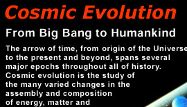
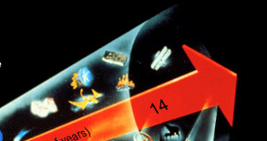
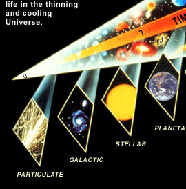
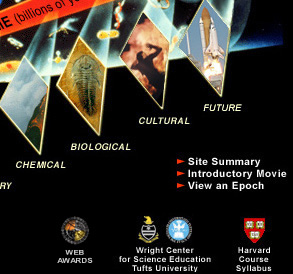

Mukto-Mona Celebrates Darwin Day February 12, 2006
......... Please visit our Darwin day 200th anniversary in 2009 page ........ .... Celebrate Darwin Day with Mukto-Mona ......
A Journey Through Our




Please Visit Darwin Day 2009 celebration page
Why celebrating Darwin Day
Special greetings for Darwin Day Celebration
What is Evolution?
Why Evolution Matters
Human Evolution
Darwin, his Life & Work
Videos on Evolution
Dawkins on Science, Evolution & Religion
MM interviews Dr. Victor Stenger
Intelligent Design: Not a science
Did Darwin Die a Christian?
A Note of Thanks & Acknowledgement
Feedback on Darwin Day Page
Reprinted for Mukto-Mona, by permission of Eric J. Chaisson, Wright Center for Science Education
English Articles
Bangla Articles
Conflict Between God & Theory of Evolution MM Collection
The Ethics of Evolution vis a vis the Creationist theories from the world's religions Mehul Kamdar
Smattering Reflections on Darwin Day Ahsanul Akbar
Our Modern World Sans Charles Darwin! A.H. Jaffor Ullah
The Evolution of Creationism Victor J. Stenger
Darwin and Darwinism Richard Dawkins
The Implications of Evolution Aparthib
Putting the “Natural” in Natural History: Darwin Exhibit Opens In New York Austin Dacey
Epigenetics, Maternal Nutrition, and the Evolution Asim K. Duttaroy
Evolution of Darwin’s Evolution Theory Bonna Ahmed
Interesting Darwin Jahed Ahmed
Charles Darwin and Religion Farida Majid
What Religion Has To Do with Darwin’s Seminal Findings? A.H. Jaffor Ullah
In Defense of Evolution Mark I. Vuletic
Scientists Say Chimps are Closer to Human than Other Apes A.H. Jaffor Ullah
Supernatural Science Victor J. Stenger
Yin and Yang of Kenneth Miller: How Professor Miller finds Darwin's God Amiel Rossow
Evolution of belief Raihan
A Poem on Evolution HassanAl Abdullah
Scientists Celebrate Darwin's Birthday fwd Syed Aslam
(Part: 1 | 2 | 3 | 4 | 5a | 5b | 5c)
(1 | 2 | 3 | 4 | 5)
Send Your Feedback at: mukto-mona@yahoogroups.com